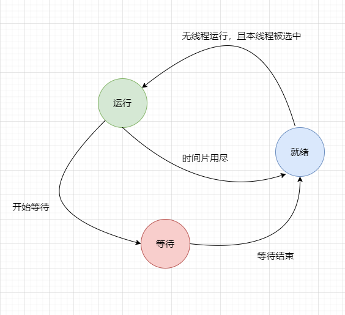

曾经没有注意阅读,没想到程序员的自我修养中也有讲解线程基础知识,说明线程是很重要的一个知识点,本篇笔记不会系统的记录线程的知识点,只记录一些自己从没见过的知识点,作为知识补充吧
线程(Thread),也可以叫轻量级进程(Lightweight Process,LWP),用gdb的时候没少见LWP这几个字,原来就是线程的意思
| 线程私有 | 线程之间共享(进程所有) |
| 局部变量(栈) | 全局变量 |
| 函数的参数(栈) | 堆上的数据 |
| TLS(线程局部存储)数据 | 函数里的静态变量 |
| 程序代码,任何线程都有权利读取并执行任何代码 | |
| 打开的文件,A线程打开的文件可以由B线程读写 |
运行状态就是线程正在运行,CPU被此线程占用
就绪状态就是线程没有运行可以立刻运行,但是CPU被其他线程占用了
等待状态就是线程本身在运行,但是需要等待某一事件发生后才能继续运行,此时CPUb被其他线程占用

可抢占线程是指在线程的时间片(time slice)未完全用尽时,可以被操作系统或其他线程强制剥夺继续执行的权利,从而进入就绪状态,以便其他线程获得CPU执行权。
特性:
随机性:线程的调度时机具有不确定性,因为任何线程都可能在时间片未结束时被抢占。
高效性:通过抢占机制,系统可以更有效地利用CPU资源,避免某些线程长时间占用CPU而导致其他线程饥饿。
复杂性:由于调度时机的不确定性,可抢占线程在同步和互斥等方面可能需要更复杂的机制来避免冲突和数据不一致。
不可抢占线程是指线程在执行过程中,只有在线程主动放弃执行(如等待I/O操作完成、主动放弃时间片等)时,才会进入就绪状态,否则将一直执行直到完成。
特性:
确定性:线程调度的时机是确定的,只发生在线程主动放弃执行或等待某一事件时。
简单性:由于调度时机的确定性,不可抢占线程在同步和互斥等方面可能相对简单。
局限性:在某些情况下,不可抢占线程可能导致CPU资源利用不充分,因为某些线程可能长时间占用CPU而不释放。
书上举了一个著名的关于线程安全的例子,如下表格,i的值最后会是多少?
| 线程1 | 线程2 |
| i = 1 | c = --i |
| c = ++i |
我将三个语句排成不同的顺序执行,感觉i的值最后都等于1,看起来没有线程安全问题
但实际上是我想简单了,问题就出在c = ++i和c = --i这个语句上,这个语句看似是一个操作,但是在更底层上(汇编语言级别)其实是多个操作
c = ++i对应的汇编代码
add DWORD PTR [rbp-0x4],0x1
mov eax,DWORD PTR [rbp-0x4]
mov DWORD PTR [rbp-0x8],eax
c = --i对应的汇编代码
sub DWORD PTR [rbp-0x4],0x1
mov eax,DWORD PTR [rbp-0x4]
mov DWORD PTR [rbp-0x8],eax
可以看到,一句c++代码对应的是三句汇编代码,汇编代码执行的顺序情况就很多了,这样就会出现其他不同的的执行结果(这里就不举例了,不太懂汇编代码)
目前认为一句高级语言代码可能会被转换成多句汇编指令,但一句汇编指令不会再被拆分成更新的执行语句,汇编指令的执行是原子性的,在执行时不会被打断
操作系统或者更底层会提供一些原子操作函数,但是书中认为这些函数难以处理复杂情况,因此更多情况使用的还是锁
接着书中就开始介绍同步以及实现的方法
注意,同步是解决多线程竞态条件的一种思想,所谓同步,是指在一个线程访问数据未结束时,其他线程不得对同一个数据进行访问,这样一来,对数据的访问就是原子化的了。
接着,书中例举了一些实现同步的方法,如: 锁、二元信号量、多元信号量、互斥量、临界区、读写锁、条件变量
这里就不一一详细描述上述方法了,知道有哪些,用的时候再看
可重入这个名词以前听说过,但是一直不知道是指什么,没想到在这里遇见了
这里先解释一下函数重入的概念,就是当一个函数A正在执行且没有执行完毕时,由于其他原因A被再次调用,又进入A内部执行
出现函数重入的情况
(1) 多个线程同时执行这个函数
(2) 函数自身调用自己
如果一个函数被称为可重入的,表明该函数被重入之后不会产生恶性结果
函数可重入,我认为函数内部应该是没有用到被共享的资源,参数来源仅来自于值传递的形参,这样就是对外界没有影响了
可重入的函数是并发安全的保障
即便用到了上面的方法去是实现同步,但线程安全问题依旧没有解决
很难想象,有一部分问题来自于编译器和CPU的过度优化,就可能会出现,代码实际执行的顺序和你写(认为)的不一样
【本地链接】使用volatile修饰变量,能够解决编译器过度优化的问题,但是无法解决CPU的动态调度换序
书中还提到单例模式的线程安全问题,我以前也看过,这波算是梦幻联动了
书中提出CPU优化换序的问题使得实现多线程安全保障变得异常困难,目前并不存在可移植的阻止换序的方法
通常情况下是调用CPU提供的一条指令,被称为barrier(会阻止CPU将该指令之前的指令交换到barrier之后),不同的架构的CPU的barrier指令的名称各不相同(这种解决方法以后用到再详细研究)
本节最后稍微介绍了一下,操作系统内核线程和用户态线程的对应关系,后面有用到的再看